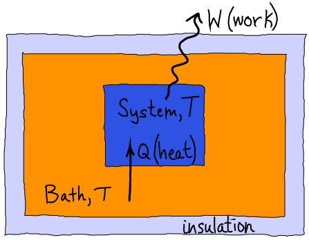

$
\newcommand{\avg}[1]{\langle #1 \rangle}
\newcommand{\conc}[1]{[\mathrm{#1}]}
\newcommand{\conceq}[1]{[\mathrm{#1}]^{\mathrm{eq}}}
\newcommand{\kcat}{k_{\mathrm{cat}}}
\newcommand{\kdt}{k_{\mathrm{dt}}}
\newcommand{\kdtsol}{k^{\mathrm{sol}}_{\mathrm{dt}}}
\newcommand{\kkeq}{K^{\mathrm{eq}}}
\newcommand{\kmmon}{\kon^{\mathrm{ES}}}
\newcommand{\kmmoff}{\koff^{\mathrm{ES}}}
\newcommand{\kconf}{k_{\mathrm{conf}}}
\newcommand{\koff}{k_{\mathrm{off}}}
\newcommand{\kon}{k_{\mathrm{on}}}
\newcommand{\ktd}{k_{\mathrm{td}}}
\newcommand{\ktdsol}{k^{\mathrm{sol}}_{\mathrm{td}}}
\newcommand{\ss}{\mathrm{SS}}
$
From Free Energy to Work, Thermodynamically
The amount of work a system can do is limited by the the change in its free energy.
Work is done during spontaneous processes in which the free energy decreases.
Spontaneous processes, roughly speaking, amount to systems in non-equilibrium states either relaxing toward equilibrium, or systems "trying" to relax to equilibrium without being able to because of external constraints.
An example of external constraints is the continual addition of substrate and removal of product from an enzyme in steady state: the system never reaches the natural equilibrium between substrate and product because of (externally driven) addition/removal processes.
A quick thermodynamic derivation

We will use the schematic above to aid in deriving the limits on work that can be performed in a thermal environment.
Our derivation will be based on the following assumptions and notation, which are explained in most basic physics texts.
- A system is separated from a much larger "bath" in such a way that the system is maintained at the same constant temperature $T$ as the bath.
- $Q$ is the heat transferred from bath to system - could be negative.
- $W$ is the work done by the system on the environment.
- The entropy and average energy of the system are $S_{\mathrm{sys}}$ and $\avg{E}_{\mathrm{sys}}$.
- The changes in these quantities during the spontaneous process are deoted by $\Delta S_{\mathrm{sys}}$ and $\Delta \avg{E}_{\mathrm{sys}}$.
- Our derivation will assume the system's volume remains constant and therefore use the Helmholtz free energy $F = \avg{E} - T \, S$ but an analogous result is valid for the Gibbs free energy $G$.
- The first law of thermodynamics: $Q = \Delta \avg{E}_{\mathrm{sys}} + W$, which just states that energy is conserved.
- The second law of thermodynamics: $\Delta S_{\mathrm{tot}} = \Delta S_{\mathrm{bath}} + \Delta S_{\mathrm{sys}} > 0$, which says that the total entropy (of the universe) increases in any spontaneous process.
- $\Delta S_{\mathrm{bath}} = -Q/T$ because the only change to the bath is the addition or removal of heat.
The derivation itself starts with the second law:
\begin{equation}
\label{second}
0 < \Delta S_{\mathrm{bath}} + \Delta S_{\mathrm{sys}} = -\frac{Q}{T} + \Delta S_{\mathrm{sys}},
\end{equation}
where $\Delta S_{\mathrm{sys}}$ is unknown because a complex process may be occuring in the system.
Substituting the first law into \eqref{second} leads to
\begin{equation}
\Delta \avg{E}_{\mathrm{sys}} - T \Delta S_{\mathrm{sys}} < -W
\end{equation}
Now, multiplying both sides by $-1$ (noting that the direction of inequality therefore switches) and using the definition of $F$ yields
\begin{equation}
W < - \Delta F_{\mathrm{sys}}
\end{equation}
This is the key result: the work done in a spontaneous process is limited by the change in free energy.
The negative sign in front of $F$ reflects that $\Delta F < 0$ in a spontaneous process, so that the work can be positive.
Biogically the most important type of work is chemical (i.e., shifting a chemical system further from equilibrium than it was previously) although mechanical work clearly is important for cytoskeletal processes and muscle contraction.
Not surprisingly, free energy typically is stored by chemical means.